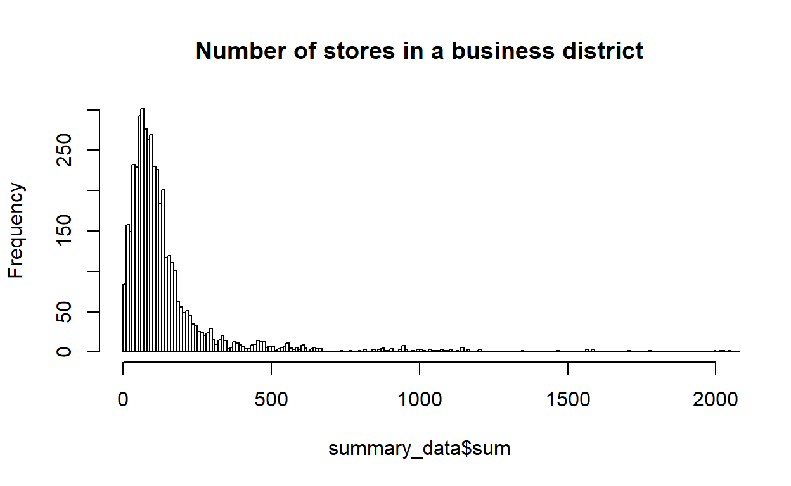
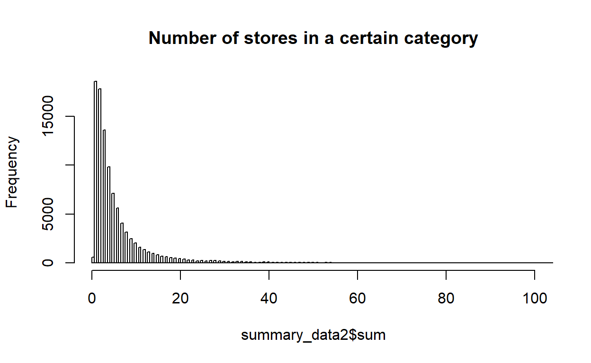
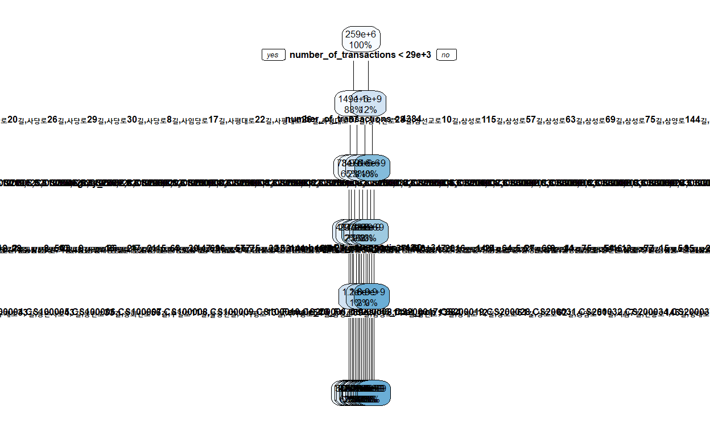

Question of interest
First, We want to estimate demand for retail stores. What factors are most important for sales of retail stores? How is this different for different types of stores?
After estimating demands, we want to focus on predicting prosperity of business district. Does a business district will prosper or collapse? why? what factors are the most important to estimate long-term success of a business district? How can we predict the success of newly developed business district?
Data

Figure 1: example of a business district
https://golmok.seoul.go.kr/fixedAreaAnalysis.do
This is retail sales data of business districts in Seoul. Each observation represents the total sales of a specific category in a specific commercial district on a quarterly basis. In the picture above, I picked 3 business district as examples. The area is 113,805, 140,820, 262,527 squared meters. We can see that thea area is quite small.
In estimates_sales_year files, there are sales, number of transactions, percentage and amount of sales on weekdays and weekends and each day of the week, percentage and amount of sales generated in each time slot(00-06, 06-11, 11-14, 14-17, 17-21, 21-24), percentage and amount of sales generated by men, women and age groups, and number of transaction classified according to the above creteria, and number of stores.
Also, for other datasets, there are related variables like worker population(by age groups and sex), worker population for hinterland, floating population by sex, age, day of the week, and time slot, average operating month of a district and operated month for closed stores, number of nearby apartment complex and apartments classified by squared meters and price groups, average income and expenditure by sectors for hinterland dwellers.
import the data
year quarter bd_class_code bd_class_codename
Min. :2020 Min. :1.000 A:63920 골목상권:63920
1st Qu.:2020 1st Qu.:1.000 D:22191 관광특구: 844
Median :2020 Median :2.000 R:12599 발달상권:22191
Mean :2020 Mean :1.998 U: 844 전통시장:12599
3rd Qu.:2020 3rd Qu.:3.000
Max. :2020 Max. :3.000
district_code district_name
Min. :1000001 종로?청계 관광특구 : 169
1st Qu.:1000415 명동 남대문 북창동 다동 무교동 관광특구: 167
Median :1000815 신사동 가로수길 : 162
Mean :1000777 홍익대학교 주변 : 155
3rd Qu.:1001131 강남구 논현역_2 : 154
Max. :1001496 압구정 로데오거리_2 : 153
(Other) :98594
category_code category_name sales
CS100001: 4320 한식음식점 : 4320 Min. :5.300e+01
CS200028: 3931 미용실 : 3931 1st Qu.:2.366e+07
CS300002: 3536 편의점 : 3536 Median :9.053e+07
CS100010: 3510 커피-음료 : 3510 Mean :5.641e+08
CS100009: 3427 호프-간이주점: 3427 3rd Qu.:3.349e+08
CS300001: 3415 슈퍼마켓 : 3415 Max. :4.806e+11
(Other) :77415 (Other) :77415
number_of_transactions sales_weekday_ratio sales_weekend_ratio
Min. : 1 Min. : 0.00 Min. : 0.00
1st Qu.: 447 1st Qu.: 69.00 1st Qu.: 12.00
Median : 2442 Median : 77.00 Median : 23.00
Mean : 22419 Mean : 77.51 Mean : 22.57
3rd Qu.: 13175 3rd Qu.: 88.00 3rd Qu.: 31.00
Max. :4451470 Max. :100.00 Max. :100.00
sales_monday_ratio sales_tuesday_ratio sales_wednesday_ratio
Min. : 0.00 Min. : 0.00 Min. : 0.00
1st Qu.: 11.00 1st Qu.: 11.00 1st Qu.: 12.00
Median : 14.00 Median : 15.00 Median : 15.00
Mean : 15.37 Mean : 15.37 Mean : 15.44
3rd Qu.: 18.00 3rd Qu.: 18.00 3rd Qu.: 18.00
Max. :100.00 Max. :100.00 Max. :100.00
sales_thursday_ratio sales_friday_ratio sales_saturday_ratio
Min. : 0.00 Min. : 0.00 Min. : 0.00
1st Qu.: 12.00 1st Qu.: 13.00 1st Qu.: 9.00
Median : 15.00 Median : 16.00 Median : 15.00
Mean : 15.41 Mean : 16.11 Mean : 14.44
3rd Qu.: 18.00 3rd Qu.: 18.00 3rd Qu.: 18.00
Max. :100.00 Max. :100.00 Max. :100.00
sales_sunday_ratio time_00.06_sales_ratio time_06.11_sales_ratio
Min. : 0.000 Min. : 0.00 Min. : 0.00
1st Qu.: 0.000 1st Qu.: 0.00 1st Qu.: 0.00
Median : 7.000 Median : 0.00 Median : 4.00
Mean : 8.166 Mean : 4.15 Mean : 7.83
3rd Qu.: 14.000 3rd Qu.: 1.00 3rd Qu.: 12.00
Max. :100.000 Max. :100.00 Max. :100.00
time_11.14_sales_ratio time_14.17_sales_ratio time_17.21_sales_ratio
Min. : 0.00 Min. : 0.00 Min. : 0.00
1st Qu.: 11.00 1st Qu.: 13.00 1st Qu.: 20.00
Median : 22.00 Median : 24.00 Median : 31.00
Mean : 22.66 Mean : 24.78 Mean : 31.06
3rd Qu.: 31.00 3rd Qu.: 33.00 3rd Qu.: 41.00
Max. :100.00 Max. :100.00 Max. :100.00
time_21.24_sales_ratio male_sales_ratio female_sales_ratio
Min. : 0.000 Min. : 0.00 Min. : 0.00
1st Qu.: 0.000 1st Qu.: 41.00 1st Qu.: 33.00
Median : 2.000 Median : 54.00 Median : 47.00
Mean : 9.731 Mean : 53.47 Mean : 46.62
3rd Qu.: 15.000 3rd Qu.: 67.00 3rd Qu.: 59.00
Max. :100.000 Max. :100.00 Max. :100.00
age10_sales_ratio age20_sales_ratio age30_sales_ratio
Min. : 0.000 Min. : 0.00 Min. : 0.00
1st Qu.: 0.000 1st Qu.: 4.00 1st Qu.: 11.00
Median : 0.000 Median : 13.00 Median : 19.00
Mean : 1.109 Mean : 17.27 Mean : 20.14
3rd Qu.: 1.000 3rd Qu.: 26.00 3rd Qu.: 27.00
Max. :100.000 Max. :100.00 Max. :100.00
age40_sales_ratio age50_sales_ratio ageover60_sales_ratio
Min. : 0.00 Min. : 0.00 Min. : 0.00
1st Qu.: 14.00 1st Qu.: 12.00 1st Qu.: 4.00
Median : 21.00 Median : 20.00 Median : 11.00
Mean : 23.67 Mean : 21.92 Mean : 16.13
3rd Qu.: 28.00 3rd Qu.: 28.00 3rd Qu.: 23.00
Max. :100.00 Max. :100.00 Max. :100.00
weekday_sales_amount weekend_sales_amount monday_sales_amount
Min. :0.000e+00 Min. :0.000e+00 Min. :0.000e+00
1st Qu.:1.773e+07 1st Qu.:3.194e+06 1st Qu.:2.542e+06
Median :6.822e+07 Median :1.785e+07 Median :1.204e+07
Mean :4.342e+08 Mean :1.298e+08 Mean :8.326e+07
3rd Qu.:2.556e+08 3rd Qu.:7.201e+07 3rd Qu.:4.783e+07
Max. :4.329e+11 Max. :1.447e+11 Max. :8.812e+10
tuesday_sales_amount wednesday_sales_amount thursday_sales_amount
Min. :0.000e+00 Min. :0.000e+00 Min. :0.000e+00
1st Qu.:2.653e+06 1st Qu.:2.746e+06 1st Qu.:2.751e+06
Median :1.239e+07 Median :1.271e+07 Median :1.251e+07
Mean :8.674e+07 Mean :8.563e+07 Mean :8.546e+07
3rd Qu.:4.928e+07 3rd Qu.:4.936e+07 3rd Qu.:4.883e+07
Max. :1.071e+11 Max. :8.723e+10 Max. :8.442e+10
friday_sales_amount saturday_sales_amount sunday_sales_amount
Min. :0.000e+00 Min. :0.000e+00 Min. :0.000e+00
1st Qu.:2.936e+06 1st Qu.:2.066e+06 1st Qu.:0.000e+00
Median :1.364e+07 Median :1.164e+07 Median :3.358e+06
Mean :9.313e+07 Mean :8.144e+07 Mean :4.840e+07
3rd Qu.:5.315e+07 3rd Qu.:4.625e+07 3rd Qu.:2.348e+07
Max. :8.452e+10 Max. :8.959e+10 Max. :5.509e+10
time_00.06_sales_amount time_06.11_sales_amount
Min. :0.000e+00 Min. :0.000e+00
1st Qu.:0.000e+00 1st Qu.:0.000e+00
Median :0.000e+00 Median :2.224e+06
Mean :1.884e+07 Mean :5.754e+07
3rd Qu.:1.634e+06 3rd Qu.:2.093e+07
Max. :6.445e+10 Max. :8.009e+10
time_11.14_sales_amount time_14.17_sales_amount
Min. :0.000e+00 Min. :0.000e+00
1st Qu.:2.230e+06 1st Qu.:3.593e+06
Median :1.586e+07 Median :1.764e+07
Mean :1.403e+08 Mean :1.470e+08
3rd Qu.:7.023e+07 3rd Qu.:6.866e+07
Max. :1.478e+11 Max. :1.959e+11
time_17.21_sales_amount time_21.24_sales_amount male_sales_amount
Min. :0.000e+00 Min. :0.000e+00 Min. :0.000e+00
1st Qu.:5.521e+06 1st Qu.:0.000e+00 1st Qu.:9.960e+06
Median :2.487e+07 Median :1.775e+06 Median :4.200e+07
Mean :1.549e+08 Mean :4.546e+07 Mean :2.624e+08
3rd Qu.:9.467e+07 3rd Qu.:2.089e+07 3rd Qu.:1.592e+08
Max. :1.156e+11 Max. :1.669e+10 Max. :2.342e+11
female_sales_amount age10_sales_amount age20_sales_amount
Min. :0.000e+00 Min. :0.000e+00 Min. :0.000e+00
1st Qu.:7.961e+06 1st Qu.:0.000e+00 1st Qu.:7.627e+05
Median :3.595e+07 Median :3.406e+04 Median :7.260e+06
Mean :2.389e+08 Mean :3.060e+06 Mean :8.244e+07
3rd Qu.:1.383e+08 3rd Qu.:1.171e+06 3rd Qu.:3.964e+07
Max. :1.093e+11 Max. :3.492e+09 Max. :3.836e+10
age30_sales_amount age40_sales_amount age50_sales_amount
Min. :0.000e+00 Min. :0.000e+00 Min. :0.000e+00
1st Qu.:2.333e+06 1st Qu.:3.893e+06 1st Qu.:3.612e+06
Median :1.347e+07 Median :1.809e+07 Median :1.650e+07
Mean :1.037e+08 Mean :1.177e+08 Mean :1.083e+08
3rd Qu.:5.752e+07 3rd Qu.:6.851e+07 3rd Qu.:6.262e+07
Max. :6.184e+10 Max. :1.047e+11 Max. :7.192e+10
ageover60_sales_amount transaction_number_weekday
Min. :0.000e+00 Min. : 0
1st Qu.:1.425e+06 1st Qu.: 343
Median :8.530e+06 Median : 1828
Mean :8.607e+07 Mean : 17036
3rd Qu.:3.872e+07 3rd Qu.: 9932
Max. :8.148e+10 Max. :3009961
transaction_number_weekend transaction_number_monday
Min. : 0 Min. : 0
1st Qu.: 74 1st Qu.: 59
Median : 522 Median : 340
Mean : 5382 Mean : 3331
3rd Qu.: 2956 3rd Qu.: 1932
Max. :2111539 Max. :588427
transaction_number_tuesday transaction_number_wednesday
Min. : 0 Min. : 0
1st Qu.: 61 1st Qu.: 62
Median : 351 Median : 362
Mean : 3360 Mean : 3385
3rd Qu.: 1963 3rd Qu.: 1959
Max. :609313 Max. :574001
transaction_number_thursday transaction_number_friday
Min. : 0 Min. : 0
1st Qu.: 62 1st Qu.: 67
Median : 358 Median : 391
Mean : 3394 Mean : 3567
3rd Qu.: 1975 3rd Qu.: 2114
Max. :588859 Max. :758619
transaction_number_saturday transaction_number_sunday
Min. : 0 Min. : 0
1st Qu.: 51 1st Qu.: 0
Median : 351 Median : 101
Mean : 3138 Mean : 2244
3rd Qu.: 1830 3rd Qu.: 1033
Max. :1251941 Max. :859598
time_00.06_transaction time_06.11_transaction time_11.14_transaction
Min. : 0 Min. : 0 Min. : 0
1st Qu.: 0 1st Qu.: 0 1st Qu.: 48
Median : 0 Median : 69 Median : 467
Mean : 1021 Mean : 2965 Mean : 5453
3rd Qu.: 50 3rd Qu.: 835 3rd Qu.: 3153
Max. :1085353 Max. :1379259 Max. :1500024
time_14.17_transaction time_17.21_transaction time_21.24_transaction
Min. : 0 Min. : 0 Min. : 0
1st Qu.: 83 1st Qu.: 116 1st Qu.: 0
Median : 509 Median : 701 Median : 40
Mean : 4607 Mean : 6162 Mean : 2210
3rd Qu.: 2729 3rd Qu.: 3820 3rd Qu.: 709
Max. :1269383 Max. :1492452 Max. :389631
male_transaction female_transaction age10_transaction
Min. : 0 Min. : 0 Min. : 0.0
1st Qu.: 210 1st Qu.: 162 1st Qu.: 0.0
Median : 1226 Median : 997 Median : 5.0
Mean : 11690 Mean : 9878 Mean : 353.1
3rd Qu.: 6498 3rd Qu.: 5657 3rd Qu.: 95.0
Max. :2603209 Max. :1829525 Max. :140639.0
age20_transaction age30_transaction age40_transaction
Min. : 0 Min. : 0 Min. : 0
1st Qu.: 28 1st Qu.: 59 1st Qu.: 88
Median : 284 Median : 419 Median : 497
Mean : 5792 Mean : 5097 Mean : 4204
3rd Qu.: 2220 3rd Qu.: 2520 3rd Qu.: 2514
Max. :1184669 Max. :894029 Max. :837748
age50_transaction ageover60_transaction number_of_stores
Min. : 0 Min. : 0 Min. : 0.000
1st Qu.: 81 1st Qu.: 38 1st Qu.: 2.000
Median : 473 Median : 259 Median : 3.000
Mean : 3572 Mean : 2549 Mean : 8.258
3rd Qu.: 2304 3rd Qu.: 1389 3rd Qu.: 7.000
Max. :965348 Max. :1385663 Max. :11203.000
Including Plots
library(dplyr)
# number of stores in one business district.
summary_data <- estimated_sales_2020 %>%
group_by(year,quarter,district_code) %>%
summarise(sum = sum(number_of_stores),
n = n())
summary_data
# A tibble: 4,455 x 5
# Groups: year, quarter [3]
year quarter district_code sum n
<int> <int> <int> <int> <int>
1 2020 1 1000001 117 18
2 2020 1 1000002 60 13
3 2020 1 1000003 188 24
4 2020 1 1000004 77 16
5 2020 1 1000005 40 11
6 2020 1 1000006 24 10
7 2020 1 1000007 163 18
8 2020 1 1000008 69 9
9 2020 1 1000009 106 13
10 2020 1 1000010 111 22
# ... with 4,445 more rows
As we can see, the business district usually consists of 0~100 stores. As we have seen in the picture, the area is quite small.
# number of stores in one business district, by category
summary_data2 <- estimated_sales_2020 %>%
group_by(year,quarter,district_code,category_code) %>%
summarise(sum = sum(number_of_stores),
n = n())
summary_data2
# A tibble: 99,554 x 6
# Groups: year, quarter, district_code [4,455]
year quarter district_code category_code sum n
<int> <int> <int> <fct> <int> <int>
1 2020 1 1000001 CS100001 19 1
2 2020 1 1000001 CS100002 1 1
3 2020 1 1000001 CS100003 3 1
4 2020 1 1000001 CS100004 3 1
5 2020 1 1000001 CS100005 4 1
6 2020 1 1000001 CS100006 2 1
7 2020 1 1000001 CS100008 8 1
8 2020 1 1000001 CS100010 23 1
9 2020 1 1000001 CS200001 3 1
10 2020 1 1000001 CS200008 1 1
# ... with 99,544 more rows
number of stores in a certain category in one business district.
merge_test <- merge(estimated_sales_2020,Businessdistrict_apartment,by=c("year","quarter","bd_class_code","bd_class_codename","district_code","district_name"))
merge_test <- merge(merge_test,Businessdistrict_changeindex,by=c("year","quarter","bd_class_code","bd_class_codename","district_code","district_name"))
merge_test <- merge(merge_test,Businessdistrict_worker_population,by=c("year","quarter","bd_class_code","bd_class_codename","district_code","district_name"))
merge_test <- merge(merge_test,Hinterland_income_consumption,by=c("year","quarter","bd_class_code","bd_class_codename","district_code","district_name"))
merge_test <- merge(merge_test,Hinterland_worker_population,by=c("year","quarter","bd_class_code","bd_class_codename","district_code","district_name"))
library(rsample)
library(dplyr)
library(rpart)
library(rpart.plot)
set.seed(123)
ames_split <- initial_split(merge_test, prop = .7)
ames_train <- training(ames_split)
ames_test <- testing(ames_split)
# grid for tuning parameters
hyper_grid <- expand.grid(
minsplit = seq(5,20,1),
maxdepth = seq(8,15,1)
)
head(hyper_grid)
minsplit maxdepth
1 5 8
2 6 8
3 7 8
4 8 8
5 9 8
6 10 8models <- list()
for (i in 1:nrow(hyper_grid)) {
# get minsplit, maxdepth values at row i
minsplit <- hyper_grid$minsplit[i]
maxdepth <- hyper_grid$maxdepth[i]
# train a model and store in the list
# print("minsplit, maxdepth is")
# print(minsplit)
# print(maxdepth)
models[[i]] <- rpart(
formula = sales ~ .,
data = ames_train,
method = "anova",
control = list(minsplit = minsplit, maxdepth = maxdepth)
)
}
# function to get optimal cp
get_cp <- function(x) {
min <- which.min(x$cptable[, "xerror"])
cp <- x$cptable[min, "CP"]
}
# function to get minimum error
get_min_error <- function(x) {
min <- which.min(x$cptable[, "xerror"])
xerror <- x$cptable[min, "xerror"]
}
hyper_grid %>%
mutate(
cp = purrr::map_dbl(models, get_cp),
error = purrr::map_dbl(models, get_min_error)
) %>%
arrange(error) %>%
top_n(-5, wt = error)
minsplit maxdepth cp error
1 10 8 0.01 0.07446340
2 14 10 0.01 0.07463052
3 6 15 0.01 0.07506488
4 9 15 0.01 0.07605839
5 5 8 0.01 0.07645298optimal_tree <- rpart(
formula = sales ~ .,
data = ames_train,
method = "anova",
control = list(minsplit = 10, maxdepth = 8, cp = 0.01)
)
pred <- predict(optimal_tree, newdata = ames_test)
p_error <- Metrics::rmse(actual = ames_test$sales, predicted = pred)
p_error
[1] 164402097rpart.plot(optimal_tree,cex=0.5)

The above plot is a result for tree method. It doesn’t seem to have predictive power. I think I have to estimate demands for each category.
Things to proceed
RF method
- vary the hyperparameters and RMSE
- list the most important variables based on impurity or permutation based importance